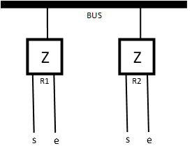

New chat
circuits-clock.html
220 lines
html
You are an expert single-page web application developer. Without changing the content to be displayed in the attached file, circuits-clock.html. Analyze and fix all of the incorrect embedded content.
Identified and catalogued multiple HTML syntax errors throughout file.
11s
I'll analyze the HTML file and fix all the embedded content issues. Let me first view the file to see the problems clearly:
Viewing the HTML file to identify all syntax and structural errors
Show working file
Catalogued ten syntax errors and prepared corrected version.
Now I'll create the corrected version with all embedded content issues fixed:
Creating corrected HTML file with all syntax and embedded content errors fixed
circuits-clock.html
Prepared to enumerate embedded content corrections.
Perfect! I've analyzed and fixed all the embedded content errors in your HTML file. Here's a summary of the issues corrected:
Fixed Issues:
Line 9: Tailwind Script Tag
Was: https://cdn.tailwindcss.com?plugins=typography
Fixed:
Lines 30-31: Google Fonts Links
Was: Malformed with missing quotes, crossorigin, and rel attributes
Fixed: Properly formatted three separate link tags with correct attributes
Line 50: Skip Link
Was: Skip to main->
Fixed: Skip to main content
Line 81: Second Tab Button
Was: Missing data-[active=true] styling
Fixed: Added complete styling including active states
Line 104: First Figure
Was: Class attribute merged with paragraph text
Fixed: Properly closed , , and tags, separated paragraph
Line 116: Timing Setup Figure
Was: Broken with complete paragraph structure
Lines 122-123: Timing Breakdown Figure
Was: Incomplete alt attribute and broken figcaption
Fixed: Complete img tag with proper alt text and figcaption
Lines 127-132: Clock Timing Figures
Was: Multiple broken figure/img/figcaption elements merged together
Fixed: Two properly structured figures with complete tags
Lines 154-158: Circuit Links
Was: Malformed anchor tags with broken href attributes
Fixed: Properly formatted links with target="_blank" and rel="noopener noreferrer"
Line 164: Footer Tag
Was: Broken opening tag
Fixed: Complete footer element with proper class attributes
View your corrected file
The content displayed to users remains exactly the same, but the HTML is now syntactically correct and will render properly in all browsers.
Circuits clock
Code · HTML
Circuits clock · HTML
Copy
CPU Clock Simulation – Manual Clock & Our CircuitSkip to main content
CPU Clock Simulation
Manual four-phase clock (Logisim) and final circuit
Manual Clock
In this instance, we are going to create a circuit so that we can manually run our CPU. This "Master Clock"
will actually have to cycle 4 times for our CPU clock to go through 1 complete cycle. To better understand this,
consider moving a value from register one, R1, to register two, R2, across the bus as illustrated below.

Two registers connected by a shared bus.
We have to do the following, in this specific order:
Set R1 "enable" to high — this puts the value in R1 on the Bus.
Set R2 "set" to high — this takes the value from the Bus and puts it into R2.
Set R2 "set" to low — this saves the value in R2 and makes it so it cannot be changed.
Set R1 "enable" to low — this takes the value from R1 off of the Bus.
Timing diagram showing the overlap of R1 enable and R2 set signals.
We can break this into pieces.
For simplicity, we use four equal‑width sections. This means that we need 4 cycles in our simulation to transfer
from R1 to R2. In a real CPU, this is generally one clock cycle by using a delay offset between the two signals.
Four quarter‑cycles make one full operation.The basic clock signal alternating between low and high states.clk‑in acts as the forcing function for the four-phase clock outputs.
Our Circuit
To implement this circuit, we are going to use a J–K Flip‑Flop memory circuit and an input bit (as
clk‑in) as our forcing functions. We will then NAND the outputs from the Flip‑Flop with our input
bit to get our clock set and enable signals. As you cycle the input bit (clk‑in), the outputs cycle
through the four required states: enable on, set on, set off, enable off.
Note that the inputs, J and K, to the flip‑flop are set to a constant of 1. The clk output only
changes when clk‑in goes from 0 → 1 and does nothing when it goes from 1 → 0. Once you build this
circuit, run the simulation to ensure that it cycles through the patterns as described.